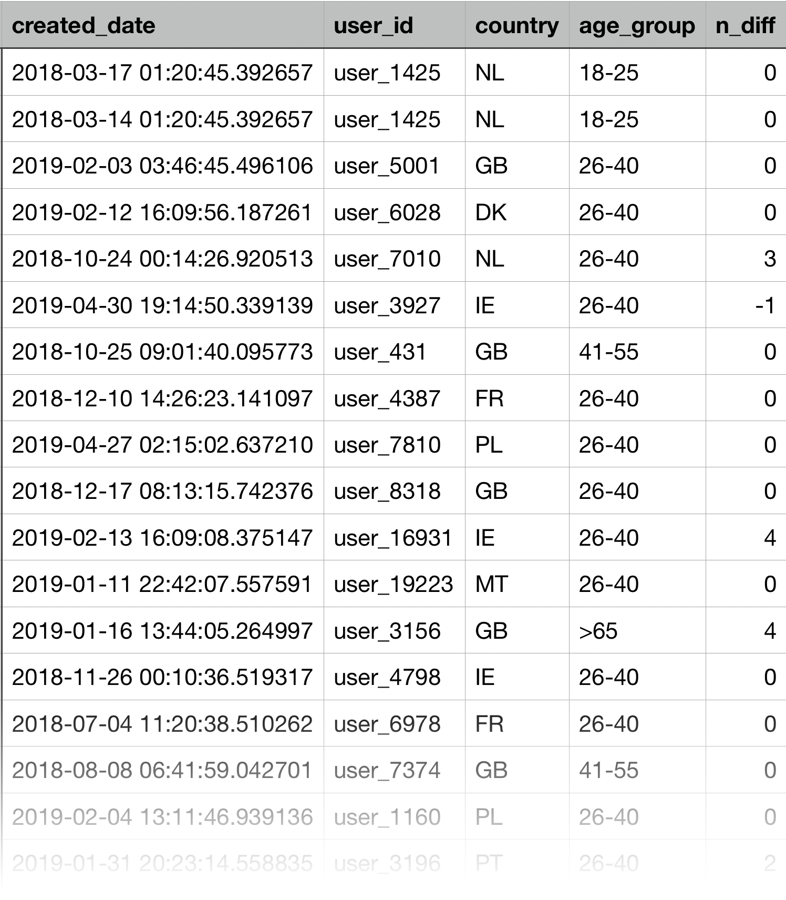
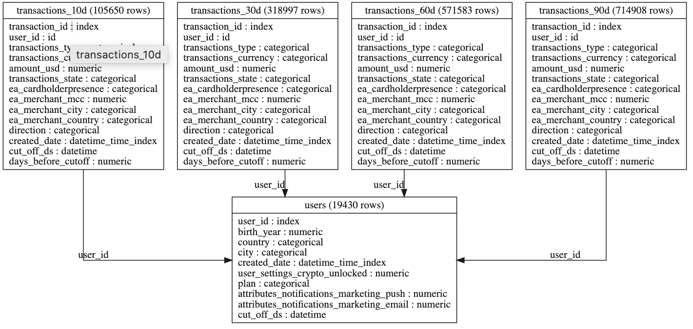
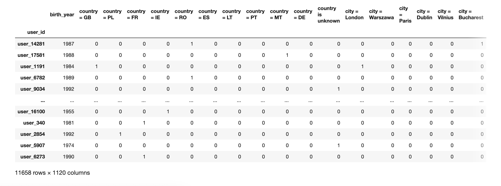

Data Science Assignment
Question 1
Q1) "What is the difference in average transactions 7 days before the notification arrived vs. 7 days after the notification arrived, by country and age group?"
Reclarifiy the question: What is the average difference , in the number of transactions per user , during the 7 day period leading up to a notification arriving, compared to the 7 day period after the notification has arrived. Calculate this by country and then by age group.
SELECT
n.created_date,
u.user_id,
u.country,
CASE
WHEN 2020-u.birth_year < 18 THEN '<18'
WHEN 2020-u.birth_year<=25 THEN '18-25'
WHEN 2020-u.birth_year<=40 THEN '26-40'
WHEN 2020-u.birth_year<=55 THEN '41-55'
WHEN 2020-u.birth_year<=65 THEN '56-65'
WHEN 2020-u.birth_year>65 THEN '>65'
ELSE NULL
END age_group,
COALESCE(COUNT(distinct t2.created_date), 0)
-COALESCE(COUNT(distinct t1.created_date), 0) n_diff
FROM notifications n
LEFT JOIN transactions t1 ON n.user_id=t1.user_id
AND DATE(t1.created_date)< DATE(n.created_date)
AND DATE(t1.created_date)>=date_add(DATE(n.created_date), -7)
LEFT JOIN transactions t2 ON n.user_id=t2.user_id
AND DATE(t2.created_date)>=DATE(n.created_date)
AND DATE(t2.created_date)< date_add(DATE(n.created_date), 7)
LEFT JOIN users u ON n.user_id=u.user_id
GROUP BY 1,
2,
3,
4
The results...

# pseudocode
results = pd.DataFrame()
for _ in range(1000):
df = raw_data.sample(frac=1, replace=True)
results = results.join( df.groupby('age_group').mean() )
ax = sns.distplot(results)

Average number of additional transactions by country.

Findings:
- The younger you are, the more impacted a notification has.
- Most impacted countries are, RO, IE and CH
- The younger you are, the more impacted a notification has.
- Most impacted countries are, RO, IE and CH
Question 2
Q2) Define a target metric to measure user engagement. How would you define an engaged vs. unengaged user?
Motivations:
- Who will be using it?
- Marketing? Customer care? Product teams?
- What are we interested in?
- New users? Established users?
- What kind of actions are we looking to take?
- Utilization/activation? Improve retention? Cross-selling/upselling?
- What are the main sources of company revenue?
- Overdraft fees?
Types of engagement metric:
- Activity Time :
- Time a user spends interacting with the service/site.
- Visit Frequency :
- Return frequency, monthly page views, volume of sessions, etc
- Core User Actions
- Sign-ups, accounts openings, balance increases, switching accounts, getting financial advice, inbound transactions .
Analysis
df = (pd.read_csv( f'../data/raw_data/rev-transactions.csv' , parse_dates=['created_date'] )
.sort_values(['user_id','created_date'])
.query('direction=="INBOUND"') )
df['days_between_transactions'] = df.groupby('user_id').created_date.transform(lambda d: d.diff().dt.days )
ax = sns.distplot( df['days_between_transactions'] )
90th percentile = 31.0
Engagement Definition
An engaged customer is someone who has had an inbound transaction within the last 30 days.
Question 3
Q3) Using your logic from above, build a model (heuristic/statistical/ML) to classify engaged and unengaged users
Why build a model?
- Prediction:
- To predict something that can't be observed directly
- e.g. a future observation
- Data that isn't collected or we only have a sample of (e.g survey)
- To predict something that can't be observed directly
- Description:
- We want to uncover trends/patterns
- e.g. find drivers of engagement
- Summarize/combined multiple engagement metrics
- We want to uncover trends/patterns
Lets build a ML pipeline to predict furture churn...
- Boundary Erosion
- Entanglement
- Changing one input changes everything
- Hidden Feedback Loops
- Your models learns from a system it is then impacting
- Undeclared Consumers
- Increases dependants, and additional feedback loops
- Entanglement
- Data Dependencies Cost More than Code Dependencies
- Unstable Data Dependencies
- Data quality changes over time
- Underutilized Data Dependencies
- Breadth first feature search can results in unnecessary data dependencies
- Static Analysis of Data Dependencies
- Unlike compiles, data dependencies cannot be tracked statically
- Correction Cascades
- We often reuse data/models. However this creates additional dependencies
- Unstable Data Dependencies
- System-level Spaghetti
- Glue Code
- Using general purpose package create in glue code, and lock you into a solution
- Pipeline Jungles
- these often evolve as new signals are identified and new information sources added
- Dead Experimental Codepaths
- Experiments can results in lots of dead code
- Configuration Debt
- Pipeline configurations are often an after thought
- Glue Code
- Changes in the External World
- Fixed Thresholds in Dynamic Systems
- Prediction thresholds might no longer be relevant
- When Correlations No Longer Correlate
- Variables may stop being predictive
- Fixed Thresholds in Dynamic Systems
- Monitoring and Testing
- Prediction Bias.
- useful tests is prediction bias
- Action Limits
- ML is at risk of leaving its desired action limits
- Prediction Bias.
Pipeline Frameworks
Results...
Let's assume we are conducting a randomized experiment.
import featuretools as ft
es = ft.EntitySet(id = 'clients')
es = es.entity_from_dataframe(
entity_id='users', dataframe=users ,
index='user_id', time_index='created_date')
es = self.es.entity_from_dataframe(
entity_id='transactions',
dataframe=transations ,
index='transaction_id',
time_index='created_date'
)
es = self.es.add_relationship(ft.Relationship( es['users']['user_id'], es[f'transactions']['user_id']))

trans_primitives = [ 'weekday' , 'hour', 'time_since_previous']
agg_primitives = ['mean', 'max', 'min', 'std', 'count', 'percent_true', 'last', 'time_since_last', 'mode']
feature_matrix, self.feature_defs = ft.dfs(
entityset=es,
target_entity='users',
trans_primitives=trans_primitives ,
agg_primitives=agg_primitives ,
verbose=1 ,
max_depth=2
)

Calculating engagement variable,
Does a user have a transaction in the 30 day period after their cut off date,
label = (self.users.assign(
label = self.transactions.query(' 0 > days_before_cutoff >= -30 ').groupby('user_id').amount_usd.sum()
).label.fillna(0) > 0).astype(int)
Question 4
Q4) Let’s assume an unengaged user is a churned user. Now suppose we use your model to identify unengaged users and implement some business actions try to convert them to engaged users (commonly known as reducing churn)
a) How would you set up a test/experiment to check whether we are actually reducing churn?
a) How would you set up a test/experiment to check whether we are actually reducing churn?
https://www.nature.com/news/1-500-scientists-lift-the-lid-on-reproducibility-1.19970
- Poor/shallow statistical understanding
- Selective reporting
- Pressure for positive results
- Low statistical power
- Bad experiment design
- Methods/code/data is not visible
- Lack of peer review
Causes
Solutions
- Improve statistical understanding
- Incentives better practices
- Pair programming / peer review
- Replication studies
- Share code/data publicly
- Build testing guidelines/frameworks
- Knowledge sharing/training
- Cross team validation
Randomized Experiment Guidelines:
Make sure treatment and control are balanced
- Stratavised sampling, A/A testing, propensity matching
Check tracking is consistent
- Do they have same number of sessions/cookies?
Understand what your observations are
- If you have split by users, then test user level stats
Calculate correct statistics/confidence intervals
- If you are unsure about the closed form solution, try bootstrapping
b) What metrics and techniques would you use to assess the impact of the business action?
When measuring the imact of an action/feature, use the following framework.
Step 1: Understand the action¶
- What are the its high level goals?
- What is it trying to solve exactly?
- Why do we believe it works?
- What are its components?
- Is it one action of a collection of actions?
- Is it the same for all users? Or is it personalized?
Step 2: Look at 3 types of metrics¶
- Local metrics:
- How many people were impacted? Did anyone see it?
- Behavioral metrics:
- What was the responce? Did they engage? Convert? End their session end suddenly?
- Overall impact:
- Percentage monthly churn, monthly net new customers, average days active since sign-up, revenue churn, unbounded retention etc
Step 3: Contextualize
- How long has it been like this?
- Does the effect decline over time?
- Is it the same across all segments/countries?
Measurement Framework
- 2. Define
- 2. Measure
- 3. Contextualize